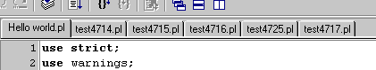
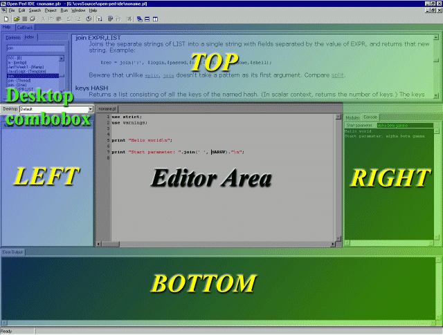

Open Perl IDE - User Manual
Version 0.9.8.168a
2 Environment
2.1 File Handling
Open Perl IDE is an MDI application, that means, it is possible to open
multiple editor windows.
Important:
There can be several different files opened, but only one window per file.
Trying to open a file a second time does not create a new window -
instead the existing window is activated to display the file.
In addition to default MDI behaviour, a Tab-Panel has been added:
This supports a fast activation of any opened window, even if there are
many of them. |
 |
Here are some other features
- DragDrop-Support: Files dropped on Open Perl IDE are opened.
- ReadOnly files are opened in a greyed window.
-
If an open file has been changed or deleted by another application,
a message is shown, asking if the file shold be reload.
All file functions are listed in the following table:
Table 2-1: File functions
| Name | Shortcut | Description |
| New | CTRL-N | Open a new, empty editor window. |
| Open | CTRL-O | Open a file in a new editor window. |
| Save | CTRL-S | Save the current editor window under the corresponding filename. |
| Save As | - | Save the current editor window under a new filename. |
| Save All | - | Save all editor windows. |
| Close | CTRL-F4 | Close the current editor window. |
| Close All | - | Close all editor windows. |
2.2 Desktop Configuration
In the current version of Open Perl IDE, the following windows are dockable:
- Output windows: Console and Error output.
- Debug windows: Breakpoints, CallStack, Variables and Modules.
- The Help window
Each dockable window can be docked in one of the four docking areas around
the editor window area. Each of these areas is sizeable.
If windows are docked in an area, there are shown as tabs hosted by a page
control. If the last window of a docking area has been removed, the hosting
page control disappears.
Hint: Pressing CTRL when moving over an area prevents a window from being docked.
Figure 2-1: Docking / editor areas and desktop combobox

- Define a new desktop
Move all dockable windows to the right positions, enter a name for the new
desktop into the desktop combobox and press return.
- Use another desktop as current desktop
Select another desktop in the desktop combobox.
- Save current desktop
Move all dockable windows to the right positions and press return in the
desktop combobox.
Hint: To associate a desktop with a program state, go to the preferences
dialog, switch to general panel and set the desktops for default,
run and debug states.
|